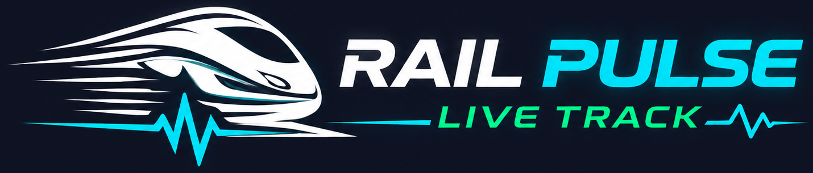

Live train status, PNR check, and an alarm that wakes you before your stop.
Rings 5–50 km before the stop you choose — even without internet, even with the phone locked. No rush when you wake.
Where the train actually is: current and next station, delay, speed, and the full stop-by-stop timeline.
Booking status, coach and berth, boarding point, and chart preparation from your 10-digit PNR.
Availability and fare across upcoming dates, with the chance of confirmation for waitlisted tickets.
Direct trains between any two stations, station arrival boards, and the railway stations nearest to you.
One tap to the official railway helplines — RPF 182, medical 138, Rail Madad 139 — or text your location to an emergency contact.